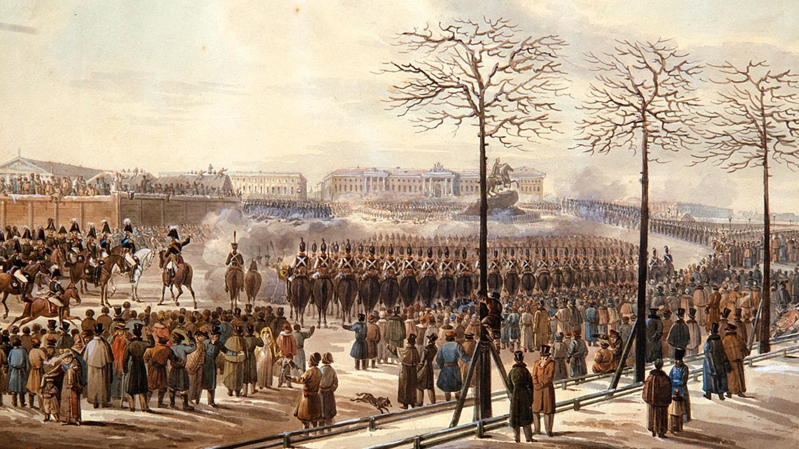
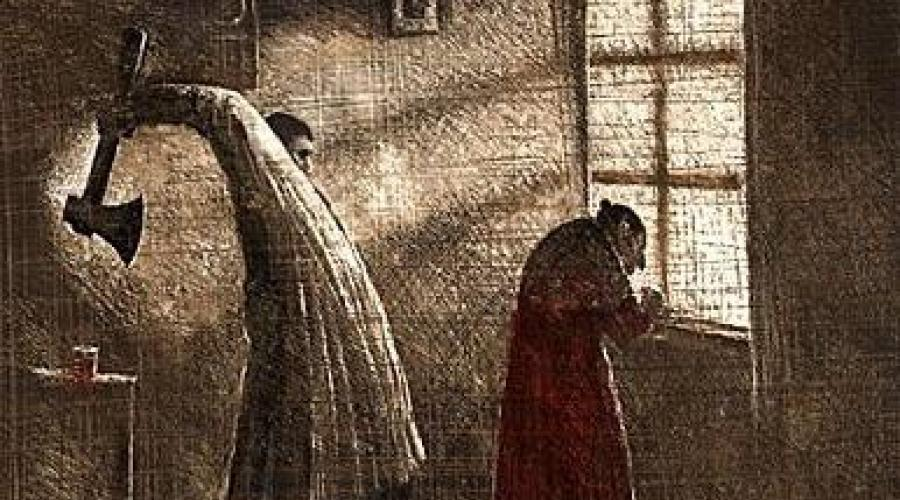
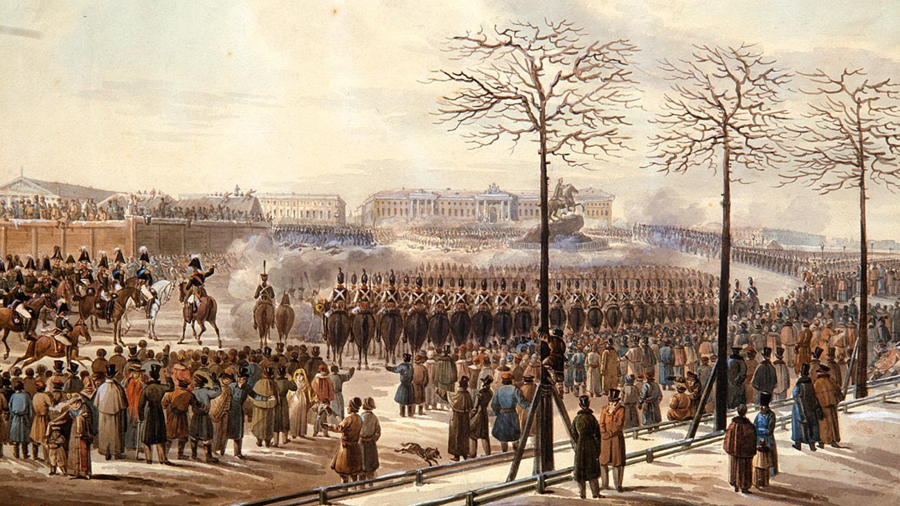
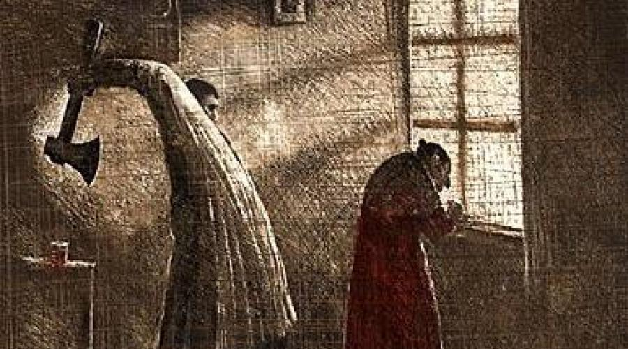
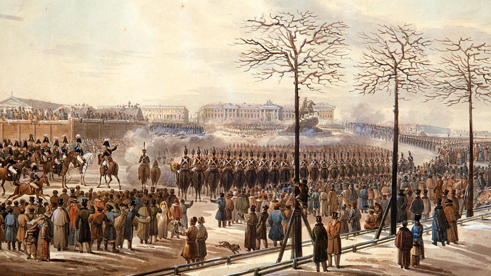
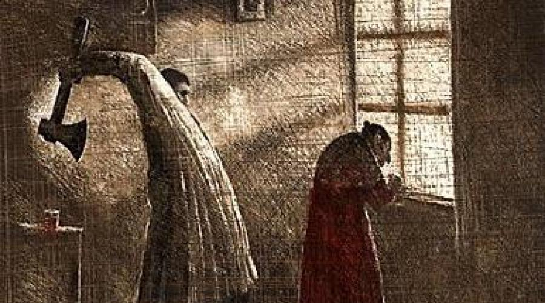

History
A timeline of Dostoevsky's life and the events of Russia surroungding him at the time.
Philosophy
 



A timeline of Dostoevsky's life and the events of Russia surroungding him at the time.

